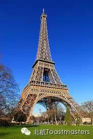
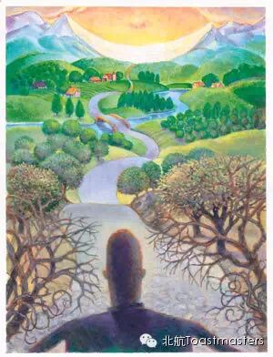

Choices
Time: 19:30-21:30, Friday, Jan 16th
Venue: Room G849, New Main Building, Beihang University
Do you remember what is the latest choice you need to make? I believe it should not be quite long since we need to make choices all the time.
What to dress in the morning?
Who to meet and where to go?
Some choices are easy to make, some are not;
Some brought us happiness, some may cause endless pain;
Some people are lucky, they always have plenty choices while some dont…
Some people say:
Life is just about destiny, it dosn’t matter what you choose to do.
Some say work hard and you will get everything. There is no need to bother and hesitate.
However, in the last year, we did saw super stars fallen down, while empires raised up. It seems that not only destiny and hard work which determin who we are. sometimes making choices can also make significant influences.
If life is scarcity
What do you wish to experience
Do u still have a choice
What would u choose to do
Please come to join us and I believe it would become one of the best choice you have ever made!
Prepared Speech
Life is just an accident
CC1 Isabelle

Do we always need to make everything right on the schedule? There is an saying: "It is not our abilities that show what we truly are, it is our choices." Isabelle is a girl leraning French, let's find out why she made this choice.
Prepared Speech
Paraphrase
- Your way to do better in ielts exam
CC3 Lucia
As we all know Lucia is our Datui, because she is so amazing when standing on the stage. She's confident, calm, humorous, and also an excellent speaker. One thing you may not know is that she is a learning machine! She's gonna share some experience in IELTS exams tonight.
Prepared Speech
what is positive phychology
CC4 Dale

As we are living in this great, colorful world, there are so many thing can fulfill our desire. But as far as I can see, lots of people nowadays are not happy. So, how to be happy? How to think a thing in a different way? Toastmaster is a place to offer you positive energy, why? Dale will give a speech about happiness. Let's wait and see.
Map
Our meeting venue changed to RoomG849, New Main Building, Beihang University (北航新主楼G849房间). Click here to see large map. And you can phone to Keven for help.
TEL: 15810539853
See you in the meeting!

https://mp.weixin.qq.com/s/Liq5VUwexk4qJepBBRBDLQ
本页为抢救式本地归档，图文已永久保存。